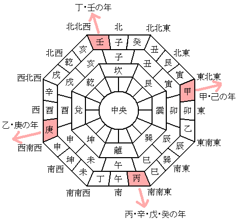

今年の恵方を取得する
正月気分も終わり，近所のスーパーとかで節分グッズが並ぶようになって「そういや今年の恵方はどっちだっけ？」と思って調べてみた。
どうやら，その年の十干で恵方が決定するらしい。

{kind=link}
って，4方向を十干で分けるのか。 中途半端やなぁ。
まぁ，でも，その年の十干が分かれば恵方も分かるわけだ。
拙作の github.com/goark/koyomi パッケージにオマケで十干十二支を数え上げる機能を付けているのだが，これに恵方を取得する機能を追加してみた。
こんな感じ。
package main
import (
"fmt"
"github.com/goark/koyomi/zodiac"
)
func main() {
year := 2023
干, 支 := zodiac.ZodiacYearNumber(year)
fmt.Printf("%d年は%v%v，恵方は%v (%v°)", year, 干, 支, 干.DirectionJp(), 干.Direction())
}
これを実行すると
2023年は癸卯，恵方は南南東微南 (165°)
と出力される。
というわけで，2023年はだいたい南南東を向いてモグモグすればいいらしい。
この「恵方」というのはその年の歳神様のおられる方位で，居住地から見て恵方にあたる社寺に詣ることを「恵方詣り」と言うらしいのだが，明治以降の鉄道の発達で長距離移動が容易になり，方位に依存する「恵方詣り」が廃れ，代わりに「初詣」が主流になっていったとのこと。 その一方で，節分の「恵方巻き」みたいな文化が平成以降に台頭してくるのは面白い。
ブックマーク
参考図書

- 鉄道が変えた社寺参詣 (交通新聞社新書)
- 平山昇 (著)
- 交通新聞社 2012-10-15 (Release 2015-12-07)
- Kindle版
- B0191845R0 (ASIN)
面白そうなのでポチってみた。これから読む。

- プログラミング言語Go
- アラン・ドノバン (著), ブライアン・カーニハン (著), 柴田芳樹 (著)
- 丸善出版 2016-06-20 (Release 2021-07-13)
- Kindle版
- B099928SJD (ASIN)
- 評価
Kindle 版出た！ 一部内容が古びてしまったが，この本は Go 言語の教科書と言ってもいいだろう。感想はこちら。

- 初めてのGo言語 ―他言語プログラマーのためのイディオマティックGo実践ガイド
- Jon Bodner (著), 武舎 広幸 (翻訳)
- オライリージャパン 2022-09-26
- 単行本（ソフトカバー）
- 4814400047 (ASIN), 9784814400041 (EAN), 4814400047 (ISBN)
- 評価
2021年に出た “Learning Go” の邦訳版。私は版元で PDF 版を購入。 Go 特有の語法（idiom）を切り口として Go の機能やパッケージを解説している。 Go 1.19 対応。

- 実用 Go言語 ―システム開発の現場で知っておきたいアドバイス
- 渋川 よしき (著), 辻 大志郎 (著), 真野 隼記 (著)
- オライリージャパン 2022-04-22
- 単行本（ソフトカバー）
- 4873119693 (ASIN), 9784873119694 (EAN), 4873119693 (ISBN)
- 評価
版元のデジタル版を購入。 Go で躓きやすい点を解説していくのが最初の動機らしい。「◯◯するには」を調べる際にこの本を調べるといいかも。